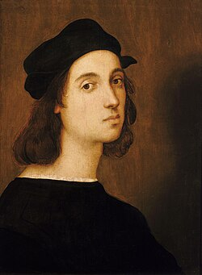
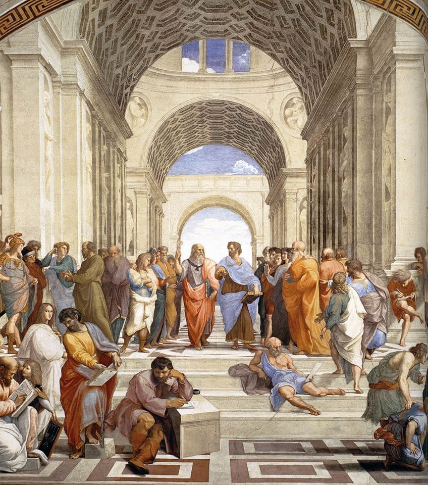

His Life

Raphael was an Italian painter and architect born in Urbino in 1483. His father, Giovanni Santi, was also a painter. Raphael later worked in Florence, where he studied the art of Leonardo da Vinci and Michelangelo. He eventually moved to Rome and created paintings for the pope. He died in 1520 at the age of 37.
Famous Paintings
Raphael's paintings are known for their balanced compositions, expressive figures, and careful attention to detail. He painted religious scenes, portraits, and frescoes. One of his most famous works, The School of Athens, brings ancient philosophers together in a grand architectural setting.

- The School of Athens
- The Sistine Madonna
- The Transfiguration
- Madonna of the Goldfinch
- Portrait of Pope Julius II
His Legacy
Although Raphael lived a short life, his work influenced artists for centuries. His approach to composition and the human figure became an important model for later painters. Today, he is remembered as one of the major artists of the Italian Renaissance, alongside Leonardo da Vinci and Michelangelo.